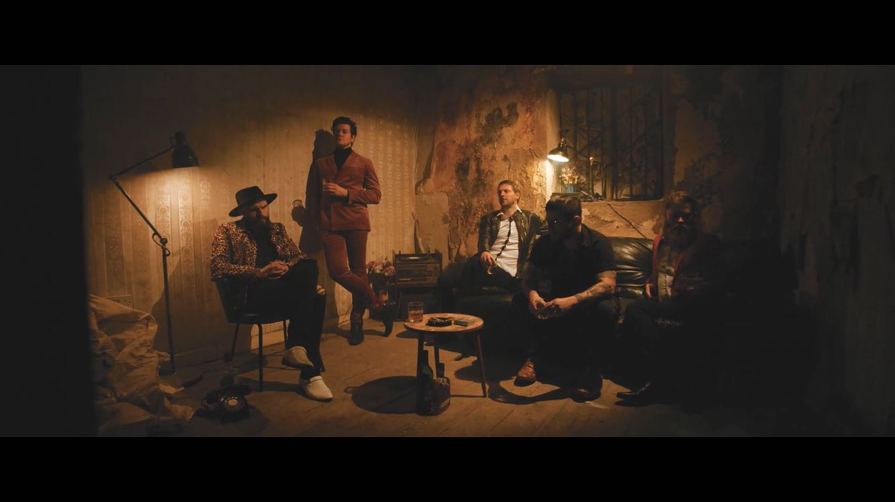

A Modern Movement: An Irish Music Website.
Reviews
Fox Jaw Album Review: Breathe in the Strange
>Fox-Jaw-BandcampLimerick stalwarts of the Irish music scene, Fox Jaw, are back with their brand-new album Breathe in the Strange. Their third studio album finds them in a new experimental phase, New techniques are used, new sounds have been found, this is an album with a larger, slightly more, cinematic feel.
This isn’t your usual Fox Jaw album, and it’s all the better for it. It has been over a decade since the formation of the band, and nearly six years since their last album Ghost Parade. It is in that time their sound has changed in numerous ways; this is a record that feels like a culmination of everything has that come before. There is growth to the Fox Jaw sound, Though, it’s not all change at Fox Jaw HQ. Tracks such as Madeline, Sun Goes Sideways, and Let it Run, find the band firmly in their own brand of inimitable musical noir tinged swagger, with stories of femme fatales and smokey rooms, that wouldn’t sound out of place in a Raymond Chandler novella.
It is easy to see why these three tracks were used as the first singles. They are catchy and easily digestible, reminiscent of recent tracks from their Black Light Vignette Ep from 2016. The rest of the album finds the band at a more restrained pace, with tracks Serrated Love, a slow and mournful rock song that is steeped in heartbreak. Someone Like You, finds the band in moody rock n roll territory that has become a mainstay in their work over the years. A track with slick guitar work, gentle keys, all deftly mixed together giving the track a sense of drama. Following this comes the album title track Breathe in the Strange, a sultry smooth song metered out to perfection. These tracks take their time, they get under the skin. They do what Fox Jaw do best, they tell stories.
It is the final track of the album Shadowland that shows the biggest change in the band’s sound, a sprawling, eleven-and-a-half-minute epic that brings the talents of every member of the band to the forefront, and in some respects it is quite reminiscent of Ultra Vox’s Vienna. A slow atmospheric track that builds to a stadium esque singalong, built over gunshot drums and vocalist Ronan Mitchells unmistakeable timbre, it is a track that has proven to be an audience favourite of recent Fox Jaw Live Shows. It is a beautiful and restrained third album that shows growth and maturity in a band ready for big things
THIS PAGE IS A PRODUCTION BY A MODERN MOVEMENT PRODUCTIONS 2021